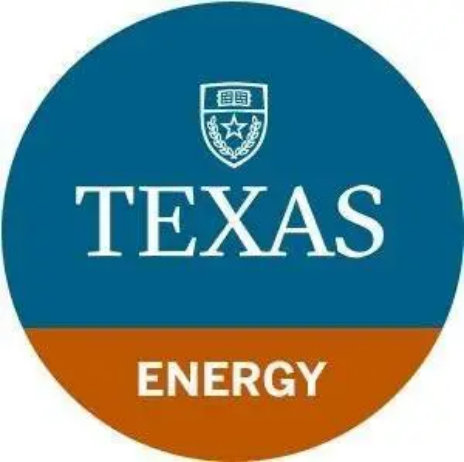

Two Proposals Funded by the Energy Institute
April 16, 2026
We submitted three proposals to the Energy Institute this year and had two of them selected for funding! These funds will support the development of cutting-edge materials and systems for improving the water sustainability of data center facilities. The two projects are titled: (1) "Reducing Water Stress in Texas: Membrane-Based Atmospheric Water Capture" (Fix, Kumar) and (2) "Scaling and Corrosion-Free Distillation to Enable Saline Water Use for Data Centers" (Bahadur, Fix). Stay tuned to learn more about our ongoing work on these exciting topics!